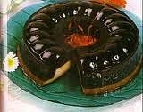

Puding Coklat Bihun

Bahan Puding :
- 1.500 ml susu cair
- 300 gram gula pasir
- 2 bungkus agar-agar bubuk
- 50 gram cokelat bubuk
- 4 kuning telur
- 150 gram bihun, diseduh
Bahan Saus :
- 500 ml susu
- 30 gram tepung maizena
- 75 gram gula pasir
- 2 kuning telur
- 3 sendok makan mentega
Cara Membuat :
- Aduk susu, gula, dan agar lalu masak sambil diaduk sampai mendidih.
- Ambil satu sendok sayur adonan lalu masukkan ke kuning telur, aduk rata.
- Tuang kembali ke dalam adonan lalu aduk rata. Masukkan bihun, aduk lalu angkat.
- Tuang ke dalam cetakan yang sudah dibilas air lalu diamkan sampai beku.
- Buat saus, aduk susu, tepung maizena, dan gula pasir. Masak sambil diaduk hingga mendidih.
- Ambil satu sendok sayur ke dalam kuning telur aduk rata. Angkat adonan dari api, tuang campuran kuning telur lalu didihkan lagi. Angkat. Tambahkan mentega aduk rata lalu dinginkan.
- Sajikan puding dingin dengan saus.
Untuk 25 buah